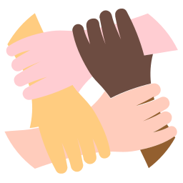
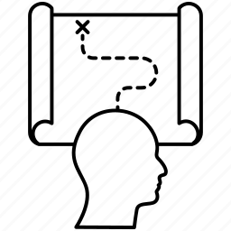

this site is designed for the population of Cocotitlan (my locality) in general, it is both for students and workers but being a site of important events in the town can easily have public throughout the municipality

Personas
- Research team: in charge of investigating the climate of the municipality and being aware of the most important events
- Editorial team:in charge of editing and publishing the news on the page

Scenarios
- Scenario one: People who work the next day at night may be interested in the weather to know if it will rain, be cold, or windy.
- scenario two: the research team found a lot of traffic on the main avenue, people who were about to leave read the news and found another way out to avoid traffic
- Scenario three: people interested in attending an event in the locality do not know exactlythe time or day, enter the page where we will have covered the times and dates of upcoming events
- Scenario four: an inhabitant of the municipality concerned about animals organizes a free canine sterilization campaign, contacts the page through the contact links to ask for support in the difucion
- Scenario five: a visitor comes to visit to see their relatives, he can use the map of the locality within the page with comments from inhabitants to avoid potentially dangerous areas